Chapter 14 Using the Propensity Score in Regressions for Causal Effects
Since Rosenbaum and Rubin, 1983b ()’s seminal paper, many creative uses of the propensity score have appeared in the literature (Bang and Robins,, 2005; Robins et al.,, 2007; Van der Laan and Rose,, 2011; Vansteelandt and Daniel,, 2014, e.g.,). This chapter discusses two simple methods to use the propensity score:
- 1.
including the propensity score as a covariate in regressions;
- 2.
running regressions weighted by the inverse of the propensity score.
I choose to focus on these two methods because of the following reasons:
- 1.
they are easy to implement, and involve only standard statistical software packages for regressions;
- 2.
their properties are comparable to many more complex methods;
- 3.
they can be easily extended to allow for flexible statistical models including machine learning algorithms.
72 Regressions with the propensity score as a covariate
By Theorem 11.1, if ignorability holds conditioning on  , then it also holds conditioning on
, then it also holds conditioning on  :
:
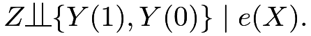 |
Analogous to (51),  is also nonparametrically identified by
is also nonparametrically identified by
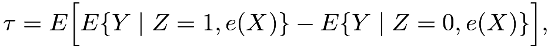 |
which motivates methods based on regressions of  on
on  and .
and .
The simplest regression specification is the OLS fit of on
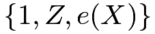
, with the coefficient of as an estimator, denoted by 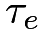
. For simplicity, I will discuss the population OLS: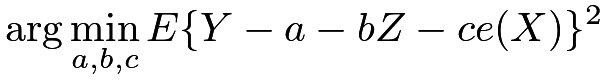 |
with defined as the coefficient of .
It is consistent for if we have a correct propensity score model and the outcome model is indeed linear in and . The more interesting result is that estimates  introduced in Chapter 70 if we have a correct propensity score model even if the outcome model is completely misspecified.
introduced in Chapter 70 if we have a correct propensity score model even if the outcome model is completely misspecified.
Theorem 14.1
If  , then the coefficient of in the population OLS fit of on equals
, then the coefficient of in the population OLS fit of on equals
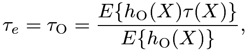 |
recalling that 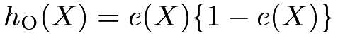 .
.
An unusual feature of Theorem 14.1 is that the overlap condition is not needed anymore. Even if some units have propensity score equaling  or
or  , their associated weight
, their associated weight  is zero so they do not contribute anything to the final parameter .
is zero so they do not contribute anything to the final parameter .
Proof of Theorem 14.1: I will use the FWL theorem reviewed in Section 31.C to prove Theorem 14.1. By the FWL theorem, we can obtain in two steps:
- 1.
we obtain the residual
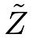
from the OLS fit of on 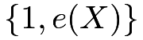
; - 2.
we obtain from the OLS fit of
on .
We can use the result on covariance in Chapter 30.A.5 to simplify the coefficient of in the OLS fit of on is
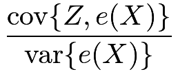 |
 |
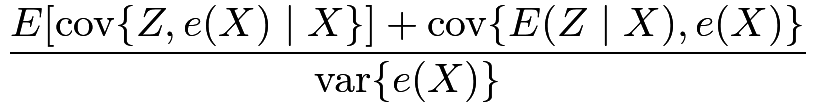 |
||
|
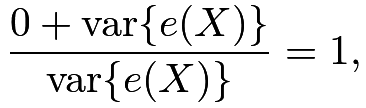 |
so the intercept is
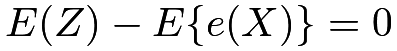
and the residual is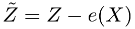
. This makes sense since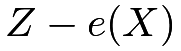
is uncorrelated with any function of.
Therefore, we can obtain from the univariate OLS fit of on a centered variable :
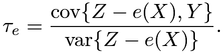 |
The denominator simplifies to
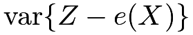 |
|
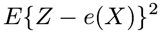 |
||
|
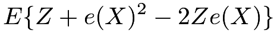 |
|||
|
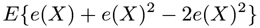 |
|||
|
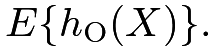 |
The numerator simplifies to
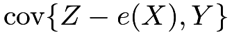 |
||||
|
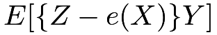 |
|||
|
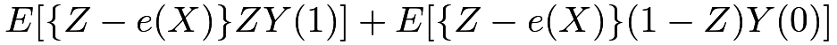 |
|||
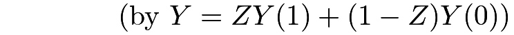 |
||||
|
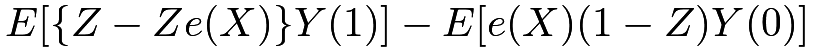 |
|||
|
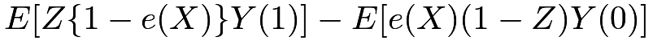 |
|||
|
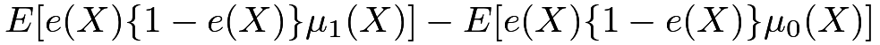 |
|||
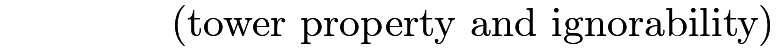 |
||||
|
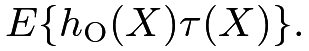 |
The conclusion follows.

From the proof of Theorem 14.1, we can simply run the OLS of on the centered treatment . Lee, (2018) proposed this procedure. Moreover, we can also include in the OLS fit which may improve efficiency in finite samples. However, this does not change the estimand, which is still . I summarize these two results in the corollary below.
Corollary 14.1
If , then
- (1)
the coefficient of in the population OLS fit of
on or 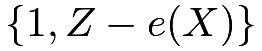
equals;
- (2)
the coefficient of
in the population OLS fit of on 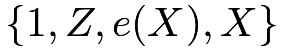
equals.
Proof of Corollary 14.1:
(1) The first result is an intermediate step in the proof of Theorem 14.1. The second result holds because regressing on or does not change the coefficient of since it has mean zero.
(2) We can use the FWL theorem again. We can first obtain the residual from the population OLS of on
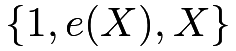
, which is because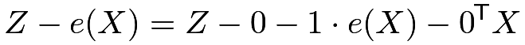 |
and is uncorrelated with any functions of .
Then the coefficient of in the population OLS fit of on equals the coefficient of in the population OLS fit of on .
Theorem 14.1 motivates a two-step estimator for :
- 1.
fit a propensity score model to obtain
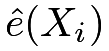
; - 2.
run OLS of
 on
on 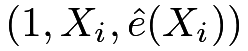
to obtain the coefficient of .
.
Corollary 14.1(1) motivates a two-step estimator for :
- 1.
fit a propensity score model to obtain ;
- 2.
run OLS of
on 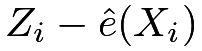
to obtain the coefficient of.
Corollary 14.1(1) motivates another two-step estimator for :
- 1.
fit a propensity score model to obtain ;
- 2.
run OLS of
on 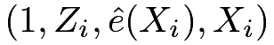
to obtain the coefficient of.
Although OLS is convenient for obtaining point estimators, the corresponding standard errors are incorrect due to the uncertainty in the first step estimation of the propensity score. We can use the bootstrap to approximate the standard errors.
Robins et al., (1992) discussed many OLS estimators based on the propensity score. The above results seem special cases of their general theory although they did not point out the connection with the estimand under the overlap weight, which was resurrected by Li et al., 2018a (). Lee, (2018) proposed to regress on from a different perspective without making connections to the existing results in Robins et al., (1992) and Li et al., 2018a ().
Rosenbaum and Rubin, 1983b () proposed to estimate the average causal effect based on the OLS fit of on
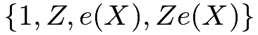
. When this outcome model is correct, their estimator is consistent for the average causal effect. However, when the model is incorrect, the corresponding estimator has a much more complicated interpretation. Little and An, (2004) suggested constructing estimators based on the OLS of on and a flexible function34 of and showed it enjoys certain double robustness property. Due to the complexity of implementation, I omit the discussion.
73 Regressions weighted by the inverse of the propensity score
73.1 Average causal effect
We first re-examine the Hajek estimator of :
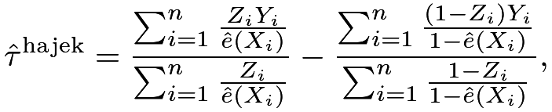 |
which equals the difference between the weighted means of the outcomes in the treatment and control groups. Numerically, it is identical to the coefficient of in the following weighted least squares (WLS) of on
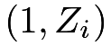
.Proposition 14.1
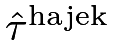
equals from the following WLS:
from the following WLS:
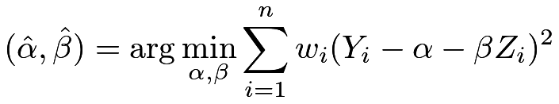 |
with weights
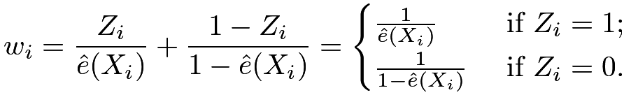 |
(74) |
Imbens, (2004) pointed out the result in Proposition 14.1. I leave it as a Problem 14.1. By Proposition 14.1, it is convenient to obtain based on WLS. However, due to the uncertainty in the estimated propensity score, the standard error reported by WLS is incorrect for the true standard error of . The bootstrap provides a convenient approximation to the true standard error.
Why does the WLS give a consistent estimator for ? Recall that in the CRE with a constant propensity score, we can simply use the coefficient of in the OLS fit of on to estimate . In observational studies, units have different probabilities of receiving the treatment and control, respectively. If we weight the treated units by
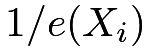
and the control units by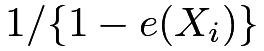
, then both treated and control groups can represent the whole population. Thus, by weighting, we effectively have a pseudo-randomized experiment. Consequently, the difference between the weighted means is consistent for. The numerical equivalence of and WLS is not only a fun numerical fact itself but also useful for motivating more complex estimators with covariate adjustment. I give one extension below.
Recall that in the CRE, we can use the coefficient of in the OLS fit of on
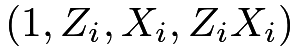
to estimate, where the covariates are centered with 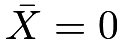
. This is Lin, (2013)’s estimator which uses covariates to improve efficiency. A natural extension to observational studies is to estimate using the coefficient of in the WLS fit of on with weights defined in (74). Hirano and Imbens, (2001) used this estimator in an application.
The fully interacted linear model is equivalent to two separate linear models for the treated and control groups.
If the linear models
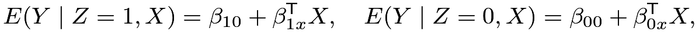 |
are correctly specified, then both OLS and WLS give consistent estimators for the coefficients and the estimators of the coefficient of are consistent for . More interestingly, the estimator of the coefficient of based on WLS is also consistent for if the propensity score model is correct and the outcome model is incorrect. That is, the estimator based on WLS is doubly robust. Robins et al., (2007) discussed this property and attributed this result to M. Joffe’s unpublished paper. I will give more details below.
Let  be the fitted propensity score and
be the fitted propensity score and
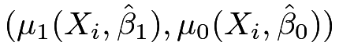
be the fitted values of the outcome means based on the WLS. The outcome regression estimator isand the doubly robust estimator for is
An interesting result is that this doubly robust estimator equals the outcome regression estimator, which reduces to the coefficient of in the WLS fit of on if we use weights (74).
Theorem 14.2
If and based on the WLS fit of on with weights (74), then
which is the coefficient of in the WLS fit.
Proof of Theorem 14.2:
The WLS fit of on is equivalent to two WLS fits based on the treated and control data. Both WLS fits include intercepts, so the weighted residuals have mean 0 (see (162)):
and
So the difference between  and is exactly zero. Both reduces to
and is exactly zero. Both reduces to
|
||||
|
with centered covariates. So they both equal the coefficient of in the WLS fit of on .
Freedman and Berk, (2008) discouraged the use of the WLS estimator above based on some simulation studies. They showed that when the outcome model is correct, the WLS estimator is worse than the OLS estimator since the WLS estimator has large variability in their simulation setting with homoskedastic outcomes. This may not be true in general. When the errors have variance proportional to the inverse of the propensity scores, the WLS estimator will be more efficient than the OLS estimator.
Freedman and Berk, (2008) also showed that the estimated standard error based on the WLS fit is not consistent for the true standard error because it ignores the uncertainty in the estimated propensity score. This can be easily fixed by using the bootstrap to approximate the variance of the WLS estimator.
Nevertheless, Freedman and Berk, (2008) found that “weighting may help under some circumstances” because when the outcome model is incorrect, the WLS estimator is still consistent if the propensity score model is correct.
I end this section with Table 6 summarizing the regression estimators for causal effects in both randomized experiments and observational studies.
| CRE | unconfounded observational studies | |
|---|---|---|
| without |
with weights | |
| with |
with weights |
73.2 Average causal effect on the treated units
The results for  parallel those for . First, the Hajek estimator for
parallel those for . First, the Hajek estimator for
 |
with  ,
equals the coefficient of in the following WLS fit on .
,
equals the coefficient of in the following WLS fit on .
Proposition 14.2
is numerically identical to in the following WLS:
with weights
| (75) |
Similar to Proposition 14.1, Proposition 14.2 is a pure linear algebra result. I relegate its proof to Problem 14.1.
Second, if we center covariates at , then we can estimate using the coefficient of in the WLS fit of on with weights defined in (75). Similarly, this estimator equals the regression estimator
which also equals the doubly robust estimator
Theorem 14.3
If and based on the WLS fit of on with weights (75), then
which is the coefficient of in the WLS fit.

 .
.
74 Homework problems
14.1 Hajek estimators as WLS estimators
Remark: These are special cases of Problem AE.3 on the univariate WLS.
14.2 Predictive estimator and doubly robust estimator
Another outcome regression estimator is the predictive estimator
where
and
It differs from the outcome regression estimator discussed before in that it only predicts the counterfactual outcomes but not the observed outcomes.
Show that the doubly robust estimator equals  if are from the WLS fits of on based on the treated and control data, respectively, with weights
if are from the WLS fits of on based on the treated and control data, respectively, with weights
| (78) |
Remark: Cao et al., (2009) and Vermeulen and Vansteelandt, (2015) motivated the weights in (78) from other more theoretical perspectives.
14.3 Weighted logistic regression with a binary outcome
With a binary outcome, we can replace linear outcome models with logistic outcome models. Show that with weights in the logistic regressions, the doubly robust estimators equal the outcome regression estimator. The result holds for both and .
14.4 Causal inference with a misspecified linear regression
Define the population OLS of on as
Recall that  is the propensity score, and define as the OLS projection of on with
is the propensity score, and define as the OLS projection of on with
- 1.
Show that
where .
- 2.
When
contains the dummy variables for a discrete covariate, show thatwhere is the overlap weight introduced in Chapter 70.
Remark: Vansteelandt and Dukes, (2022) gave the formula in part 1 without a detailed proof. The result in part 2 was derived many times in the literature (Angrist,, 1998; Ding,, 2021, e.g.,).
14.5 Analyzing a dataset from the Karolinska Institute
Revisit Problem 12.5. Estimate and based on the methods introduced in this Chapter.
14.6 Recommended reading
Kang and Schafer, (2007) gave a critical review of the doubly robust estimator, using simulation to compare it with many other estimators. Robins et al., (2007) gave a very insightful comment on Kang and Schafer, (2007).
脚注
34. For example, we can include polynomial terms of in the regression. Little and An, (2004) suggested using splines.